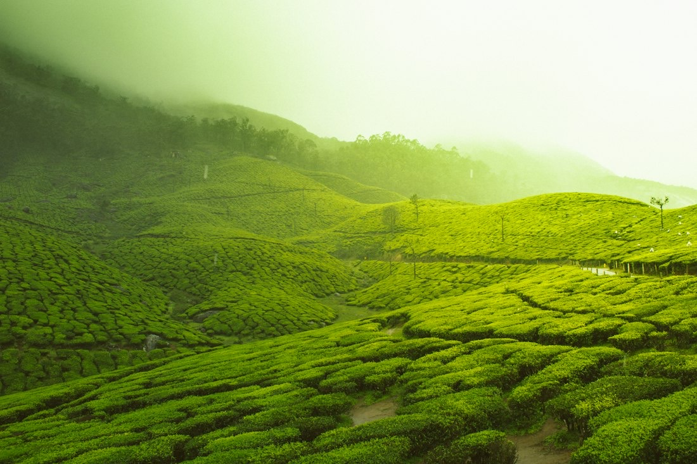
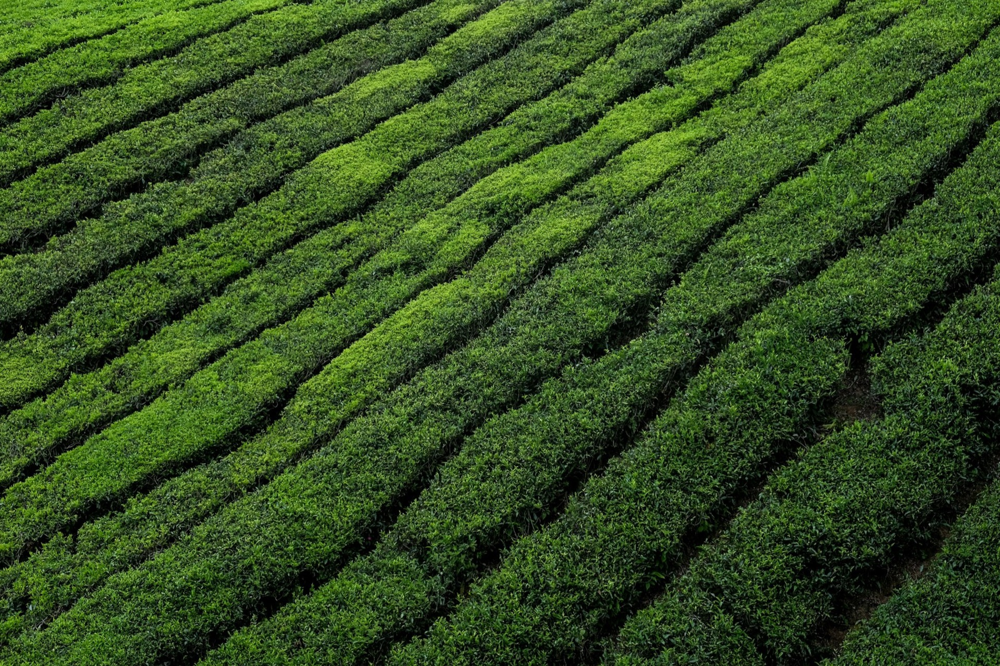
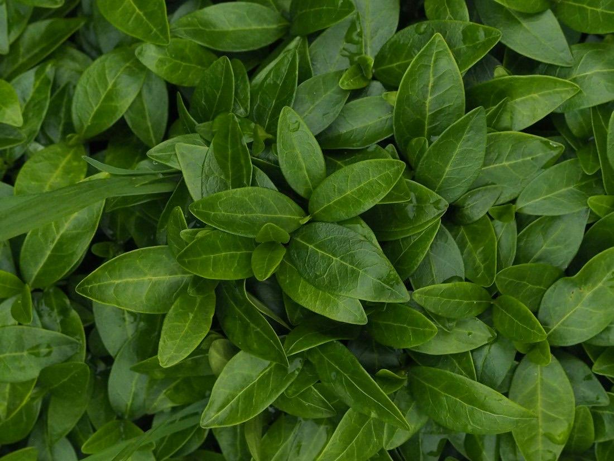
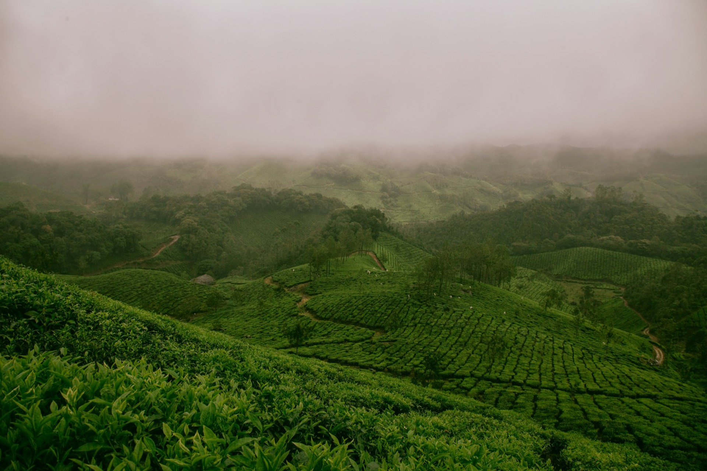

緑茶
自園で育て、自社の工場で仕上げます。

お茶の栽培・製造販売 鳥取県米子市淀江町
中国地方最高峰・大山の麓、鳥取県米子市淀江町の自園茶園でお茶を栽培し、製造販売しています。
自園自製
新芽が、
伸びる。
大山の麓、淀江町の自園の茶園で育てています。
茶畑の3Dイメージです。実際の景色とは異なります
自家用のお茶を栽培するところから始まり、淀江町のつぼかめ山で本格的にお茶の栽培を始めました。荒茶工場を建て、はま茶の栽培も始め、今では茶園は4.7ヘクタールになりました。
製造・販売部門を法人化し、緑茶・はま茶などお茶全般をお届けしています。オンラインショップもご利用いただけます。

自園で育て、自社の工場で仕上げます。

昭和57年から栽培を続けています。
クレジットカードやコンビニ決済も使えます。

…
| 営業時間 | 8:30〜15:30 |
|---|---|
| 定休日 | 土曜日・日曜日・祝日 |
ご注文はオンラインショップ、お電話・FAX・メールで。